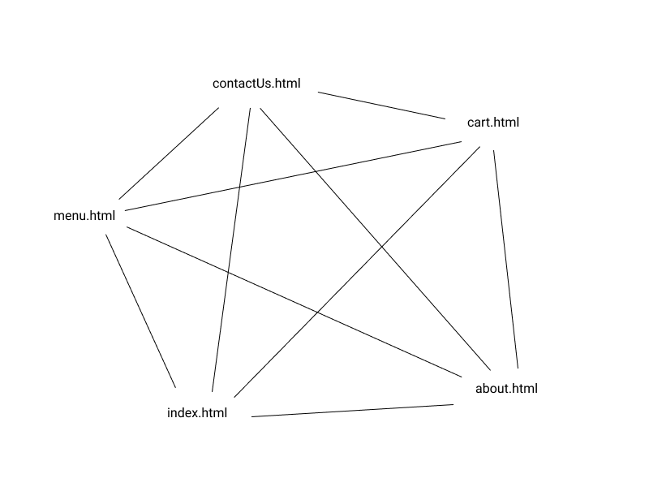
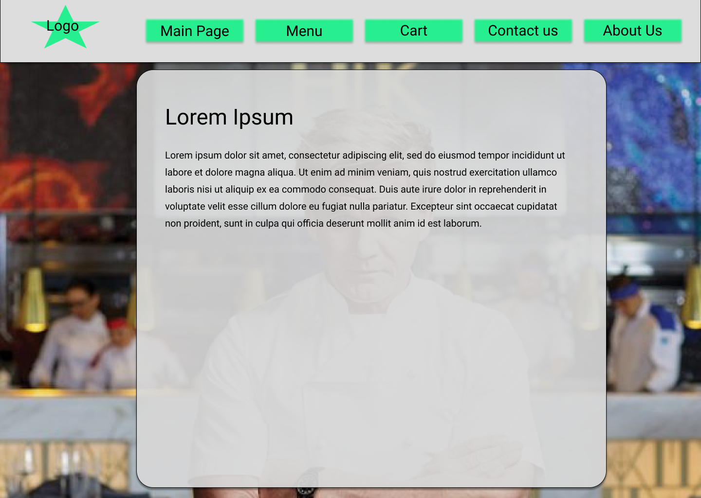
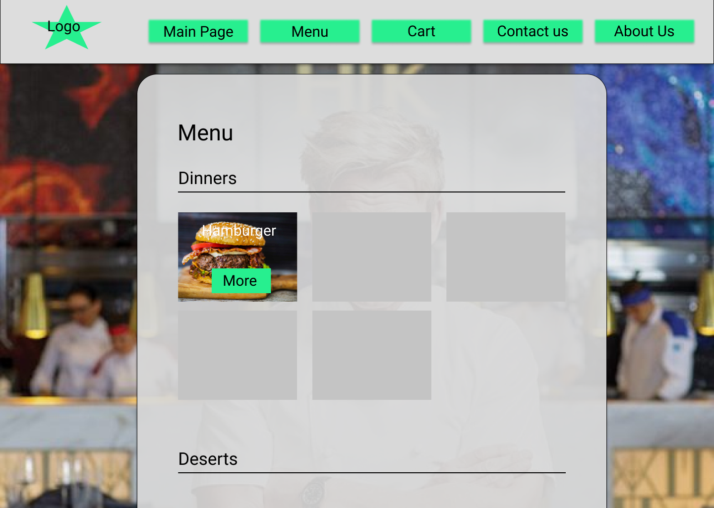
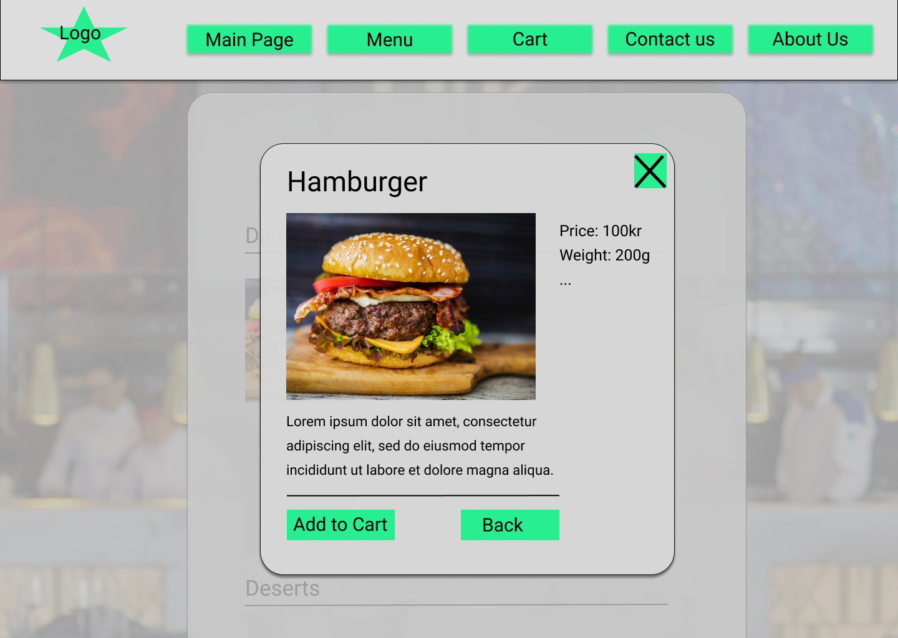

Client contact: Gradon Ramsey, owner of Hall’s Kitchen
The purpose of the site is to allow customers to see a menu and know where to go to visit the restaurant, as well as being able to order online for either pickup or eat-in meal.
The intended audience of the site are families. The website needs to be user friendly for the whole family, so both young and old. So the interface needs to be fairly simple. For example big enough font for everyone.
We want to have a navigational bar at the top of the site, where you can access all the sites from there. This is the standard way to have navigation on a web site, but it is so common that the user will expect a structure like that, and that will essentially make it more user friendly knowing that. So the navigational structure will be so that every page can navigate to every other page. As a Storyboard picture this will look like a complete graph, as you can see below.
The page layout and appearance have to match the requirements the client have made, that it should be accessible for everyone and have a premium touch to it. Therefore we have gone with a style that has bright grey colors and have black text and some teal-green colors for the buttons, so it will feel a little bit stylish, but have enough contrast so that everything is visible for everyone. The content of a normal page should be in the middle with the shape of normal paper, with enough margin horizontally. This because it is a very regular design of a webpage and familiar to a lot of people. The background should be a picture of the restaurant, possibly with Graydon Ramsey, and it could also have a little bit of blur to it so it won't be the center of attention of the site. This will add some uniqueness and character to the site. The content area could have a tiny bit of transparency so that you can see the background behind it, but this we have to test if effects the accessibility. Font type will possibly be Helvetica or Georgia and it needs to be big enough, it seems around 16-20 px should be good, here we will do further testing as with other things. The navigational bar should be at the top of the site and we want it to be in a fixed position, so that you don’t have to scroll up to access it, and it might become smaller when you scroll down. The navigational bar should have rectangular buttons that have teal-green color and bigger black text. We also want to have smooth circular corners, little bit shadow, transparency and also effects on hover over for buttons. This is so the site will feel more seamless and comfortable on the eye, so to avoid very sharp corners and too big contrasts. Finally we want to have a footer that will stick to the bottom of the page, which should match the rest of the style explained. You can see the mockup picture below to get a feeling for how this site could very simply be realized. This is of course not final, but is a general idea of what we want.
This is where you get general information and overview of the site. The main page should also be kind of catchy, possibly with a picture of Graydon Ramsey, so that the customers can get a good feel for the site.
In this page you can see the overview of the menu and all the practical information of the dishes (price, size, etc.), and you can add any of the items to the cart. There will be three headers: Dinners, deserts and appetizers. The items will be in a grid of 3 in each row on normal screens, and will be responsive to move them down if needed. The items will be an almost rectangular picture of the food with some text over it that says what it is. Here the images needs to be saved at two different sizes, small (240x180) and large (400x300) (following 4:3 aspect ratio), to ensure quality and load times. And in the image it will be a button where you can press to get more information. This will make a window that will be in focus and the background blurred out (more about this function in the script section). Inside this window you can add to cart, read more about the dish, and so on. You can of course click a button to go back to the menu with just clicking on “back” or the cross in the top right corner. When you add to cart this will modify the cart (more about how this is done in script section) and possibly response to it. You can see the two following mockups below, to get an feel for the idea.
 
On this page there will be an overview of the dishes added to the cart for
going through the order before payment. On the second picture of this point
the checkout window is shown as an overlay over the
cart, which will will function similarly to the window referenced in "Menu",
and might use the same .js script for some of the functionality.
Using the scripts for adding and deleting items from the cart we can update the
amount of each dish the customer wishes to order, which will go down to 1 with
the plus- and minus-buttons, and can be removed with the X-button in the corner.
The buttons and text will be fairly large to keep in line with the target
demographic, and to allow for different devices to interact with the site
more easily.
This function will add an item to the cart. To do this we will have a json file on the client side, that will kind of work like a cookie would on a normal site. When the addItemToCart with the appropriate argument passed in is called, it will add the selected menu item to the json file. When you go to the cart page, the json file will be loaded and contents could be displayed there. This will also be quite modular function because it will work for every menu item, with the right argument put in the function call.
This will delete item from cart. So it will delete the item from the json file, and update the content on the site accordingly.
This will be a general function that can make a focused Window, like the one you saw in the menu mockup, but with any kind of content in it. The content (like a div) could be passed in as an argument and you could also pass in width and height for the window. It will also add the blur and the cross to return back automatically. So, I would also need to make a function that could revert all these things how the page was previously. This can be done with assigning appropriate ids and classes for the different things involved. Since the focusWindow function is a general function, it could be used in other places on the website, for example to focus images (possibly in about us) or in the cart for a check out menu. This would contribute to the use of modularity of the website too.
When you click send on the send button in contact.html, the function will check valid input and give response to the user.
This will add the navbar (also footer maybe) and all its content to the page. This is so we don’t have to replicate all of it in the html for every page. Here we get a lot of modularity because this function will be used at every page on the website and remove a lot of unnecessary work.
| Torleif | cart.html | 21.10.19 |
| deleteItemFromCart.js | 28.10.19 | |
| Lukas | menu.html | 21.10.19 |
| addItemToCart.js | 28.10.19 | |
| focusWindow.js | 28.10.19 | |
| Niklas | contact.html | 21.10.19 |
| about.html | 21.10.19 | |
| contact.js | 28.10.19 | |
| Saleh | index.html | 21.10.19 |
| addNavbar.js | 28.10.19 | |
| Felles | (addNavbar.js) | 28.10.19 |
| styling.css | 21.10.19 |
http://folk.ntnu.no/torleinh/IT2805_g_60/Documents/P2_deliverable/